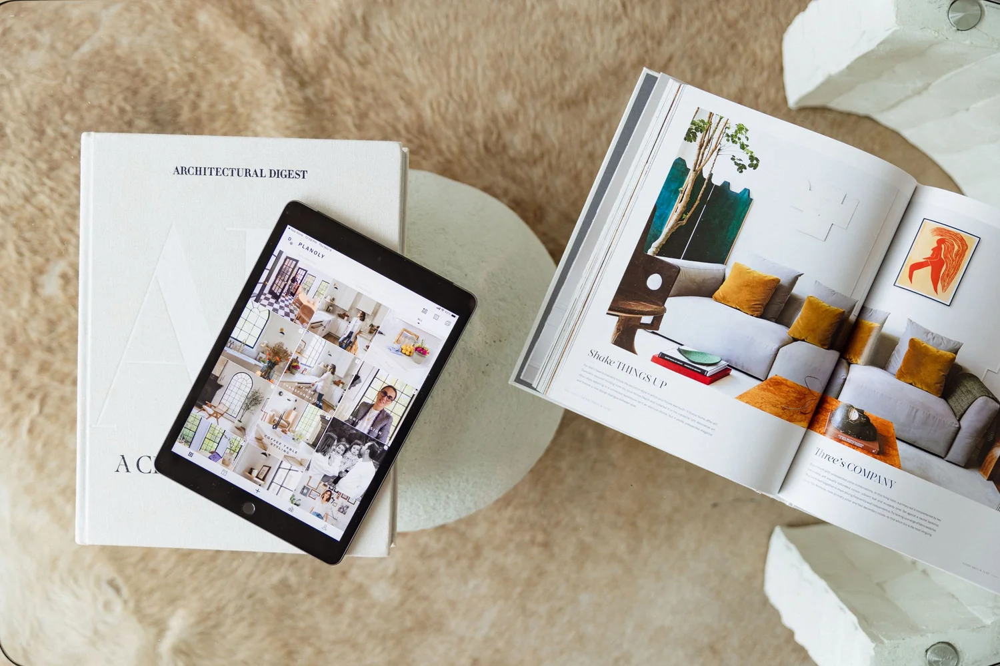

SEO results
79to11
A Minneapolis designer went from page eight of Google to one spot from page one.
sageinteriordesignmarketing.com

SEO results
sageinteriordesignmarketing.com

SEO results · 01 The starting point
Interior design · Minneapolis, MN · March to December 2024
Heather Peterson Design pairs eclectic, colorful interiors with antique heritage pieces. People searching her name found her. People searching for a designer in Minneapolis did not.
Where things stood in March 2024
Her position on Google for “interior design Minneapolis.” That is page eight of the results.
Visitors from Google each month, and that number was down 10%.
Searches the site showed up for. Many came from older blog posts that attracted readers who were not looking for a designer.
Searches related to “interior design,” the kind that lead to new clients.
The goal
Show up when a homeowner in Minneapolis searches for an interior designer, and stop spending Google’s attention on searches that do not lead to projects.
SEO results · 02 The work
Changes behind the scenes helped Google understand what she does and where she works. This work was finished at the end of May 2024.
Posts that ranked for searches unrelated to her business were cleaned up, so the site stopped attracting visitors who would never hire a designer.
Blog posts that were already bringing in steady traffic were kept as they were.
Why fewer searches was a good thing
The total number of searches the site showed up for went down. The ones that dropped were old blog posts ranking for things unrelated to interior design. The searches that matter more than doubled.
Blog posts still bringing in traffic

SEO results · 03 The results
Her spot on GoogleSearches for “interior design Minneapolis”
March → December 2024
Visitors from GoogleEach month
March → December 2024
Design searches she shows up inSearches that lead to clients
March → December 2024
Her position on Google · lower is better
Clicks from Google
50%+
more clicks in the last three months of 2024 than in the same period of 2023.
Times she appeared in search
~40%
more often in the last three months of 2024 than in the same period of 2023.
These results come from work by our SEO specialist, who now leads SEO strategy for Sage clients.
Numbers from Google Search Console and Semrush, from the December 2024 SEO check-in.